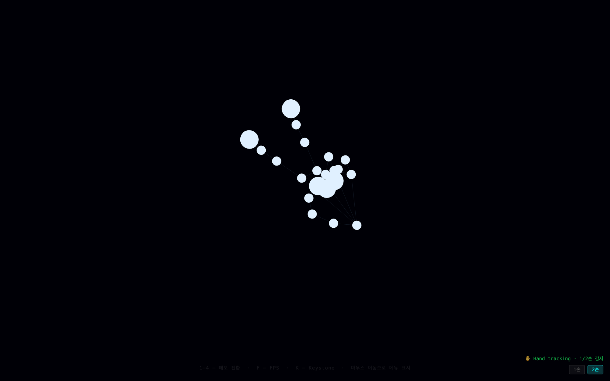
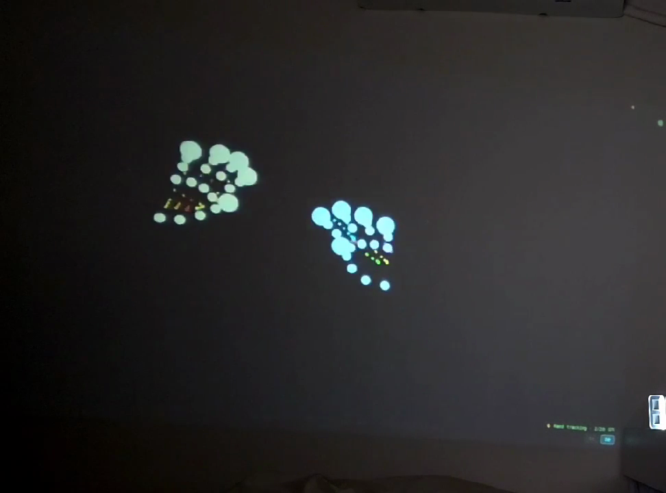
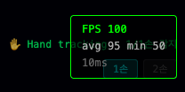
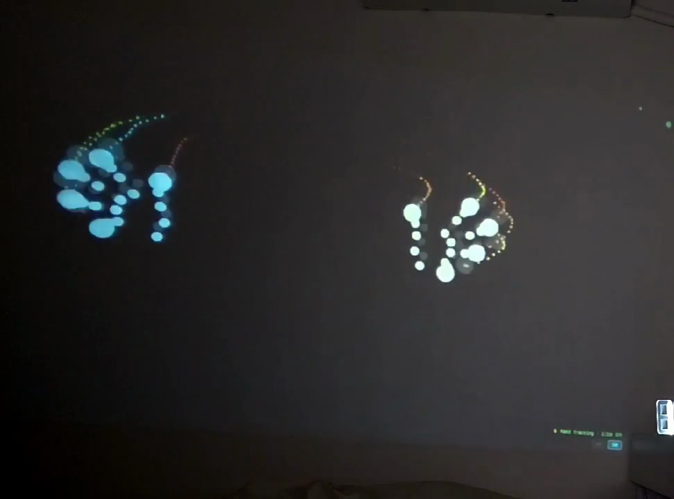
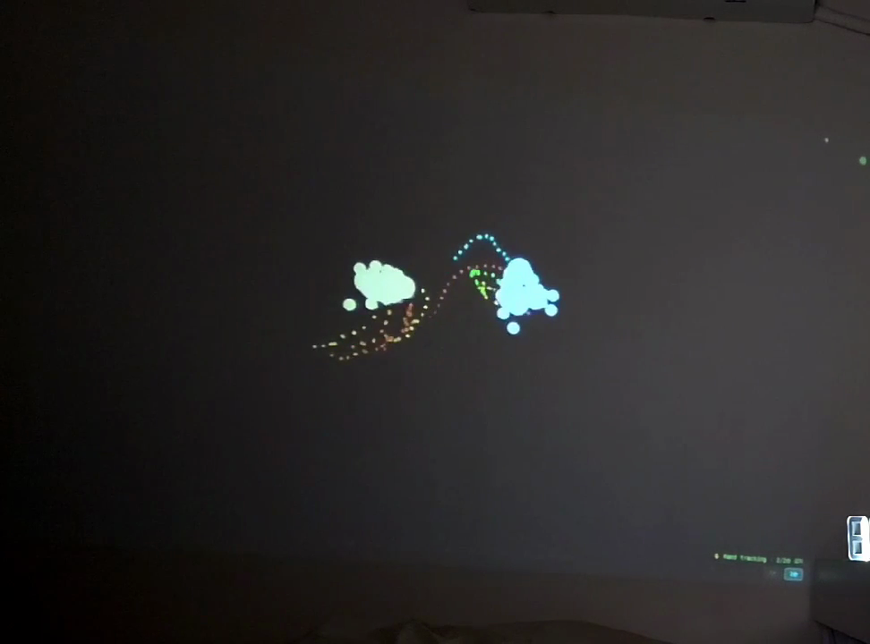

웹캠 기반 모션 인터랙션 도입
2026-06-01 | projection-art | 수산시장
웹캠 기반 모션 인터랙션 도입 — MediaPipe로 신체 움직임을 감지하여 Demo D를 구현하고, 기존 3종 데모의 인터랙션 레이어를 어댑터 패턴으로 추상화한다.
| # | 결정 내용 | 상세 |
|---|---|---|
| 1 | MediaPipe Hands 모델 채택 |
손 관절 21개, 낮은 레이턴시로 60fps 유지에 유리. Pose 전신 모델(33관절)은 Sprint/3+ 이연. |
| 2 | 인터랙션 어댑터: 멀티포인트 배열 |
InteractionPoint[] 통일 인터페이스.기존 데모는 points[0] 최소 수정으로 호환.
|
| 3 | 키스톤 보정: CSS perspective + matrix3d |
4코너 드래그 방식, localStorage 영속 저장. Canvas 호모그래피는 Sprint/3+ 이연. |
스택
@react-three/fiber (Three.js R3F)@mediapipe/tasks-vision — HandLandmarker, CDN WASMmatrix3d 키스톤 보정 (localStorage 저장)아키텍처 흐름
landmarksToPoints() → InteractionPoint[]
HandReactive, HandSceneuseMotionTracker 커스텀 훅InteractionPoint[][] 통일 인터페이스matrix3d 4코너 드래그 · localStoragenumHands: 1|2 · 손별 색상 분리 렌더링useMotionTracker 훅 단위 테스트 5 testspnpm test 전체 0 failures 103 tests이월 항목 없음 🎉
MediaPipe 추론 레이턴시 avg 7~9ms — 프레임 예산 내 허용 범위 확인. Web Worker 오프로딩 불필요.
리스크

MediaPipe Hands · 21 관절 · 골격선 + 파티클 트레일

양손 독립 추적 · 손별 색상 분리 (cyan / warm) · 실기기 확인
FPS 통계 · avg 95 · min 50 · inference ~8ms

양손 관절 감지 · 골격선 활성화

10s5 핑거팁 × 2손 = 10 트레일 · TRAIL_LENGTH 24

18s이동 중 잔상 · warm 색상 오른손 궤적
감사합니다